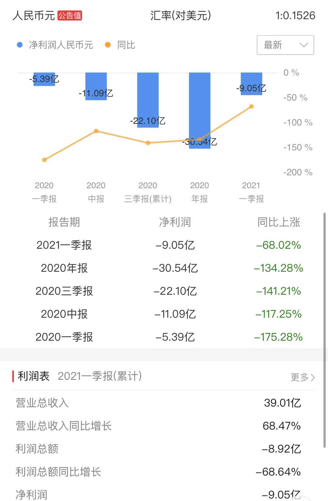
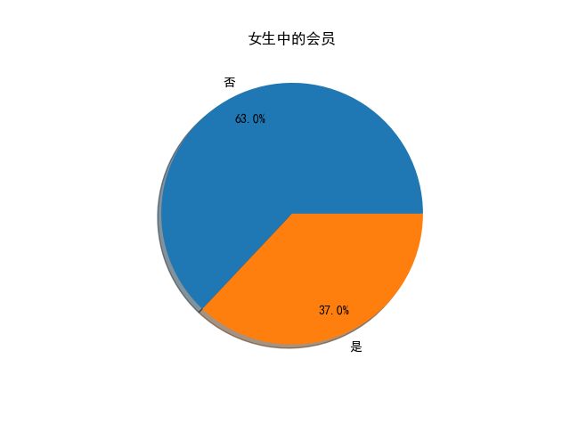

from MikuFans.com to Bilibili.com
陈睿
做大B站的男人
不知不觉间，"bilibili"这个弹幕视频网已经走过了10年的路程 十年来，B站经历过无数的风风雨雨和竞争对手的围杀。 现在的B站，已经成了国内最大的视频网之一，人人皆知，耳熟能详 已经拥有了极庞大的用户数量和经济市场。 八年前，也是一个这样的夏天，最受雷军信任的那个“小弟弟”，金山公司的副总裁怀着一腔热血出走金山 来到了当时还十分十分弱小的bilibili弹幕网站 商业帝国的第一块砖石，就此铺下。
“B站也许会倒闭，但绝不会变质。” ---陈睿

| 名字 | : | 陈睿 |
| uid | : | 000001 |
| 网站 | : | www.bilibili.com |
| 地址 | : | 上海市黄浦区 |
| 个人简介 | : | 世界最大弹幕网站的创始人，CEO |
| 爱好 | : | 钱 |
| 名言 | : | 我陈睿是bilibili最美的舞见 |
爷最爱的2233！哈哈！
成立不久后，bilibili开始招募和选举站娘，有不少作品参与选举。最终于2010年8月16日，站娘选举结果产生。由于22号与33号待选站娘票数为最高且一样，所以22娘和33娘同时入选，成为bilibili的站娘。称为“bili娘”，后来多称“2233娘”。

新闻热评
上亿规模的庞大用户群体，活跃用户中高达75%的惊人未成年人人比例，使B站获得了国家，社会及各大媒体前所未有的关注。毫不夸张的说，将近一半的祖国未来的花朵，在情绪和认知上认同，热爱B站。
-
强势入驻B站！网红“共青团中央”是如何炼成的？
2017-4-21
中国青年网
《共青团中央改革方案》指出，“建设工作网、联系网、服务网三网合一的网上共青团，形成互联网＋共青团格局，实现团网深度融合、团青充分互动、线上线下一体运行。”这次入驻Bilibil，可能也是网上共青团的一块拼图。 1月2日，微信公众号“共青团中央”以一篇《真当团中央不上B站？2017，在这里等你！》 这宣示了共青团进军Bilibili的决心。Bilibil是90后最热门的视频平台，主打动画、番剧、音乐、游戏等主题，受到广大年轻人喜爱。 共青团中央在文中用可爱的语气称，“2016年，从两微到知乎，团团的每一天，都在努力离大家更近一点，2017年，团团正式入驻Bilibili，只要中国好青年在的地方，无论千山万水，团团都赶来见你。”
-
“朱广权”们真的来了！央视新闻昨日宣布全面入驻B站
2019-12-21
中共中央电视台
在绝大多数人眼里，新闻联播都是父母等老一辈人才会守着电视观看的节目，让年轻人主动看新闻联播简直不太可能。在他们看来，新闻节目的形式太死板，远不如综艺节目和影视剧搞笑、精彩。那为何B站上的新闻节目却能得到年轻人的青睐呢？归根结底还在传播方式上。年轻观众难以接受的并不是新闻这一具体内容，而是僵化、生硬的传播形式。事实上，严肃的新闻同样也是年轻人的刚需。无论是90后还是00后，他们对关系自身利害的时政、经济新闻以及对国际事务等的了解意愿都在增强。
-
3个月涨粉30万，89岁up主走红，连老年人都在玩B站了？
2020-8-4
新浪新闻
当你还在B站答题时，你爷爷奶奶已经在上面买房了。 老年人做短视频有多野？“山支花”“末那大叔”“罗姑婆”等等在抖音快手蹿红的网红爷爷奶奶早就给我们打了样儿，这与该平台大众化的定位、用户画像分不开。 但在用户平均年龄21岁的B站，你能想象在某up主的视频弹幕上被一句“奶奶好”刷屏吗？
-
B站就服务器崩溃事件致歉
2021-07-14
环球时报
7月14日凌晨，B站通过其官方微博@哔哩哔哩弹幕网 向网友致歉，称此前网站无法访问的问题系“部分服务器机房发生故障”所致。致歉公共全文如下： 7月13晚，B站的部分服务器机房发生故障，造成无法访问。技术团队随即进行了问题排查和修复，现在服务已经陆续恢复正常。耽误大家看视频了，对不起！
快速增长期B站的用户规模及他们中年轻人的比例
B站的用户规模每年都在急速增长。但是用户中年轻人的比例却时高时低，年轻人在慢慢成长变老，中年人们也在涌入B站，寻找属于他们的快乐
2018年 B站正式上市
“如果18年你有幸抵押了自己的房子购买了B站的股票，那么三年后的今天，拥有十套房子住一套租九套，就是你在那时相信B站的未来会收获的回报”
-
B站的股票走势图，以月K线可以超直观的看见增长
2018-2021
bilibili

-
目前B站的营收状况和市净率，市盈率
成本及利润
bilibili

-
叔叔是怎么从我们的口袋里，把钱掏走的（python聚类分析）
男生中冲会员的比例
ITB

-
显然，大会员专享动画里的二次元小姐姐更让男生着迷
常识与聚类分析结果一致
Florida University

“你所热爱的，就是你的生活”
“你所热爱的，就是你的生活”
陈睿
“陈睿，你 什么时候 啊””
“陈睿，你 什么时候 啊””
B站用户：蒙古上单
“Bilibili 干杯～！”
“Bilibili 干杯～！”
b站名言
名人与B站


{kind=link}
{kind=link}
{kind=link}
{kind=link}
{kind=link}